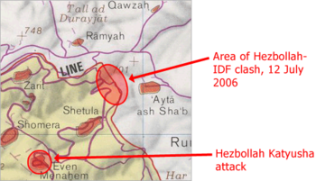

Cross-border attacks from southern Lebanon into Israel by the Palestine Liberation Organization (PLO) dated as far back as 1968, and followed the Six-Day War; the area became a significant base for attacks following the arrival of the PLO leadership and its Fatah brigade following their 1971 expulsion from Jordan. Starting about this time, increasing demographic tensions related to the Lebanese National Pact, which had divided governmental powers among religious groups throughout the country 30 years previously, began running high and led in part to the Lebanese Civil War (1975–1990).
Concurrently, Syria began a 29-year military occupation in 1976. Israel's 1978 invasion of Lebanon failed to stem the Palestinian attacks in the long run, but Israel invaded Lebanon again in 1982 and forcibly expelled the PLO. Israel withdrew to a borderland buffer zone in southern Lebanon, held with the aid of proxy militants in the South Lebanon Army (SLA).
The invasion also led to the conception of a new Shi'a militant group, which in 1985, established itself politically under the name Hezbollah, and declared an armed struggle to end the Israeli occupation of Lebanese territory. When the Lebanese Civil War ended and other warring factions agreed to disarm, both Hezbollah and the SLA refused. Ten years later, Israel withdrew from South Lebanon to the UN-designated and internationally recognized Blue Line border in 2000.
The withdrawal also led to the immediate collapse of the SLA, and Hezbollah quickly took control of the area. Later, citing continued Israeli control of the Shebaa farms region and the internment of Lebanese prisoners in Israel, Hezbollah intensified its cross-border attacks, and used the tactic of seizing soldiers from Israel as leverage for a prisoner exchange in 2004. All told, from summer 2000, after the Israeli withdrawal, until summer 2006, Hezbollah conducted approximately 200 attacks on Israel – most of them artillery fire, some raids and some via proxies inside Israel. In these attacks, including the attack that precipitated the Israeli response that developed into the war, 31 Israelis were killed and 104 were wounded.
In August 2006, in an article in The New Yorker, Seymour Hersh claimed that the White House gave the green light for the Israeli government to execute an attack on Hezbollah in Lebanon. Supposedly, communication between the Israeli government and the US government about this came as early as two months in advance of the capture of two Israeli soldiers and the killing of eight others by Hezbollah prior to the conflict in July 2006. The US government denied these claims.
According to Conal Urquhart in The Guardian, the Winograd Committee leaked a testimony from Israeli Prime Minister Ehud Olmert suggesting that Olmert "had been preparing for such a war at least four months before the official casus belli: the capture by Hezbollah of two Israeli soldiers from a border post on 12 July 2006."
Timeline

At around 9 am local time on 12 July 2006, Hezbollah launched diversionary rocket attacks toward Israeli military positions near the coast and near the border village of Zar'it as well as on the Israeli town of Shlomi and other villages. Five civilians were injured. Six Israeli military positions were fired on, and the surveillance cameras knocked out.
At the same time, a Hezbollah ground contingent infiltrated the border into Israel through a "dead zone" in the border fence, hiding in an overgrown wadi. They attacked a patrol of two Israeli Humvees patrolling the border near Zar'it, using pre-positioned explosives and anti-tank missiles, killing three soldiers, injuring two, and capturing two soldiers (First Sergeant Ehud Goldwasser and Sergeant First Class Eldad Regev).
In response to the Hezbollah feint attacks, the IDF conducted a routine check of its positions and patrols, and found that contact with two jeeps was lost. A rescue force was immediately dispatched to the area, and confirmed that two soldiers were missing after 20 minutes. A Merkava Mk III tank, an armored personnel carrier, and a helicopter were immediately dispatched into Lebanon. The tank hit a large land mine, killing its crew of four. Another soldier was killed and two lightly injured by mortar fire as they attempted to recover the bodies.
Isreal Response
Israeli Prime Minister Ehud Olmert described the seizure of the soldiers as an "act of war" by the sovereign state of Lebanon, stating that "Lebanon will bear the consequences of its actions" and promising a "very painful and far-reaching response." Israel blamed the Lebanese government for the raid, as it was carried out from Lebanese territory. Hezbollah had two ministers serving in the Lebanese cabinet at that time.
In response, Lebanese Prime Minister Fouad Siniora denied any knowledge of the raid and stated that he did not condone it. An emergency meeting of the Lebanese government reaffirmed this position.
The Israel Defense Forces attacked targets within Lebanon with artillery and airstrikes hours before the Israeli Cabinet met to discuss a response. The targets consisted of bridges and roads in Lebanon, which were hit to prevent Hezbollah from transporting the abductees. An Israeli airstrike also destroyed the runways of Beirut Rafic Hariri International Airport. 44 civilians were killed. The Israeli Air Force also targeted Hezbollah's long range rocket and missile stockpiles destroying many of them on the ground in the first days of the war. Many of Hezbollah's longer-range rocket launchers were destroyed within the first hours of the Israeli attack.
Later that same day (12 July 2006), the Cabinet decided to authorize the Prime Minister, the Defense Minister and their deputies to pursue the plan which they had proposed for action within Lebanon. Prime Minister Olmert officially demanded that the Israel Defense Forces avoid civilian casualties whenever possible. Israel's chief of staff Dan Halutz said, "if the soldiers are not returned, we will turn Lebanon's clock back 20 years" while the head of Israel's Northern Command Udi Adam said, "this affair is between Israel and the state of Lebanon. Where to attack? Once it is inside Lebanon, everything is legitimate – not just southern Lebanon, not just the line of Hezbollah posts."
On 12 July 2006, the Israeli Cabinet promised that Israel would "respond aggressively and harshly to those who carried out, and are responsible for, today's action". The Cabinet's communiqué stated, in part, that the "Lebanese Government was responsible for the action that originated on its soil." A retired Israeli Army Colonel explained that the rationale behind the attack was to create a rift between the Lebanese population and Hezbollah supporters by exacting a heavy price from the elite in Beirut.
On 16 July, the Israeli Cabinet released a communiqué explaining that, although Israel had engaged in military operations within Lebanon, its war was not against the Lebanese government. The communiqué stated: "Israel is not fighting Lebanon but the terrorist element there, led by Nasrallah and his cohorts, who have made Lebanon a hostage and created Syrian- and Iranian-sponsored terrorist enclaves of murder."
When asked in August about the proportionality of the response, Prime Minister Olmert stated that the "war started not only by killing eight Israeli soldiers and abducting two but by shooting Katyusha and other rockets on the northern cities of Israel on that same morning. Indiscriminately." He added "no country in Europe would have responded in such a restrained manner as Israel did."
Casualties
During the war Hezbollah kept a firm lid on its casualties. Although it did sometimes announce casualty numbers in specific clashes, the party did not publish a comprehensive estimate for the duration of the war. A tally made by Associated Press counted to 70 dead Hezbollah fighters officially acknowledged by the party during the war. Intelligence analysts Alastair Crooke and Mark Perry reported a few months after the war a total of 184 "Shiite martyr funerals" having been held in Lebanon since the war. They considered this number an indication of Hezbollah fatalities but warned that it could be revised upward in the future.
Four months after the end of the war the deputy chairman of the Hezbollah Political Council Mahmoud Qomati for the first time presented Hizbullah's official estimate of its losses. He claimed that 250 fighters had been killed in the war.
The NGO Human Rights Watch specifically studied 94 IDF air, artillery, and ground attacks during the war that claimed the lives of 561 persons. Only 51 of these victims were Hizbullah combatants and about half of them were women or children. HRW said it documented the identities of another 548 fatalities, bringing the total of identified Lebanese deaths in the war to 1109. It argued (as an extrapolation from those 94 attacks) that an estimated 250 of these were Hezbollah combatants and the remaining 860 were civilians.
On 6 August Haaretz reported that the IDF estimated the number of Hezbollah fighters killed to 400, but added that "armies fighting guerrilla forces tend to exaggerate the fatalities of the enemy". Matt M. Matthews military historian at United States Army Combined Arms Center, described these figures as "highly exaggerated".
By the end of the war, Israel claimed that more than 800 Hezbollah members had been killed in the war. In December 2006, Israeli government spokesperson Miri Eisin backed down from that claim, saying, "We think that it's closer to 600." The Israeli Military Intelligence (AMAN) in November 2006 estimated that some 650 Hizbullah operatives were killed, while over 800 were wounded.
Three years after the outbreak of war the Israel Foreign Affairs Ministry published a summary of the war which concluded that "over 600" Hezbollah fighters were killed in the war.
IDF Maj.-Gen. (res.) Yaakov Amidror claimed that IDF had identified the names of 440 members of Hezbollah who were killed in the war. Based on this number he estimated that the total amounted killed in the war to between 500 and 700.
According to the Yedioth Ahronoth Encyclopedia of the Second Lebanon War, the main reason for the discrepancy between Lebanese and Israeli estimates of the number of Hezbollah fatalities during the war (300 versus 700 respectively) was that the former included only Hezbollah military while the latter also included civilian members of Hezbollah.
The Amal movement, a Shiite militia that fought alongside Hezbollah, suffered 17 dead. Armed elements of the Lebanese Communist Party suffered 12 dead. The Popular Front for the Liberation of Palestine – General Command, a Palestinian militia, lost two fighters in an Israeli air raid.